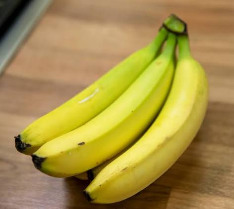

Exercicio 01

A fauna brasileira é extremamente rica e diversificada, abrigando milhares de espécies animais únicas no mundo todo. Entre elas destaca-se a majestosa onça-pintada, o maior felino do continente americano. Preservar nosso ecossistema é fundamental para manter o equilíbrio ecológico e garantir a sobrevivência de espécies ameaçadas. Para aprender mais sobre ações ambientais, acesse o site oficial do ICMBio e descubra iniciativas de proteção da biodiversidade.
Listas Ordenadas e Combinadas
Lista Não ordenada de Frutas.

